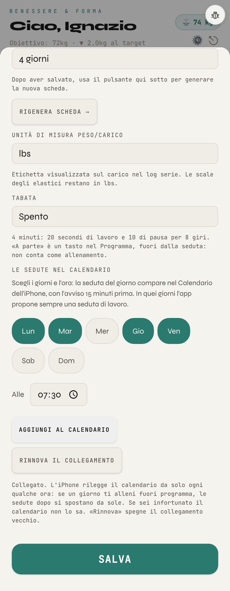

Ignazio: «collegare i passi che ci sono già (workout) impostando un orario direttamente sul calendario Apple», e «solo sedute vere». A sinistra la pagina costruita, Impostazioni › Allenamento a 390 px (Chrome vero, con giorni, ora e collegamento già salvati). A destra cosa vede nel Calendario e il file che l'iPhone riceve dal Worker.

BEGIN:VCALENDAR VERSION:2.0 PRODID:-//Zona Tracker//Sedute//IT METHOD:PUBLISH X-WR-CALNAME:Zona Tracker X-WR-TIMEZONE:Europe/Rome REFRESH-INTERVAL;VALUE=DURATION:PT4H BEGIN:VEVENT UID:zt-wrromv-2026-10-30@zona-tracker DTSTART:20261030T063000Z ← le 07:30 di Roma, in ora solare DTEND:20261030T073000Z SUMMARY:[Workout] Upper B BEGIN:VALARM TRIGGER:-PT15M ACTION:DISPLAY DESCRIPTION:[Workout] Upper B fra 15 minuti END:VALARM END:VEVENT … poi Lower B lunedì 2, Upper A martedì 3, Lower A giovedì 5, Upper B venerdì 6: 16 sedute in 4 settimane END:VCALENDAR
Il file intero è accanto a questa pagina: esempio_zona_tracker.ics.